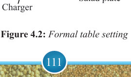
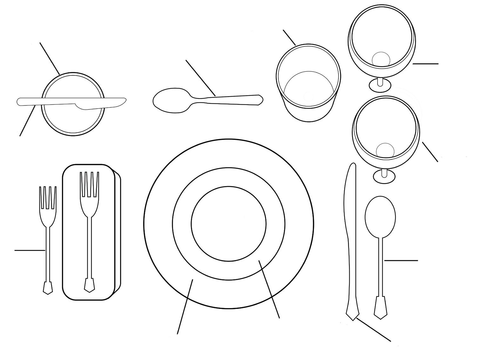

111


Food and Human Nutrition

Form Two
Communion. However, one should observe the requirements of specific
religious ethics in planning and preparing
meals. Such meals depend on the religion
and the interest of its members. Suitable
dishes for religious ceremonies or events
include meat or peas pilau, banana with
meat stew, cakes, fried chicken, fruit and
vegetable salads, fruit juice and punch.
Table setting for meals
Table setting is a proper arrangement of the dining table with tablecloths, table mats, ornaments, table runners, centrepieces and tableware such as crockery and cutlery. It is also known as table laying. A well- laid table provides a good presentation and makes the
food more appealing. However, the arrangements depend on personal or family preferences and the nature of the event. Table setting can either be formal or informal.
Formal table setting
A formal table setting is a neat and organised way of arranging tableware for meals with several courses, like starters, main dishes, and desserts. It includes placing cutlery, plates, and glasses in a specific order, often with decorations like tablecloths and centrepieces. This setup is usually used for special events or formal dinners to make the meal look and feel elegant. Figure 4.2 shows a formal table setting.

Bread plate
Red wine glass
White wine glass
Soup spoon
Dinner
Knife
Dessert spoon
Soup bowl
Water glass
Butter knife
Salad fork
Charger
Salad plate
Figure 4.2: Formal table setting
17/09/2025 16:30